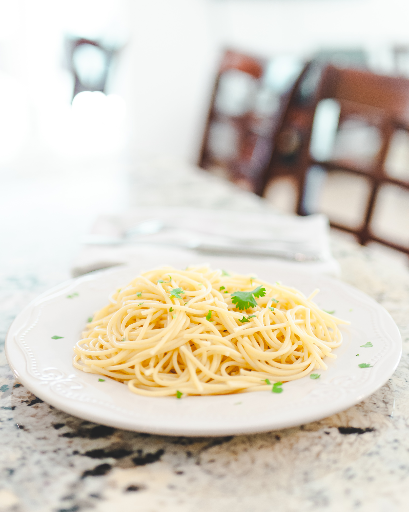

Garlic Pasta
Step 1: Fill the cooking pot with water, add salt and 2 cloves of garlic, or garlic powder, to the water and set to boil.
Step 2: Add the pasta and cook until desired softness/texture. (Around 10 minutes)
Step 3: After the pasta is cooking, drain the water.
Step 4: Add olive oil to desired taste.
Step 5: Add extra salt/garlic powder if needed for taste.
Step 6: Serve and enjoy!
- Ingredients:
- Garlic
- Salt
- Garlic powder
- Olive oil
- Pasta of choice